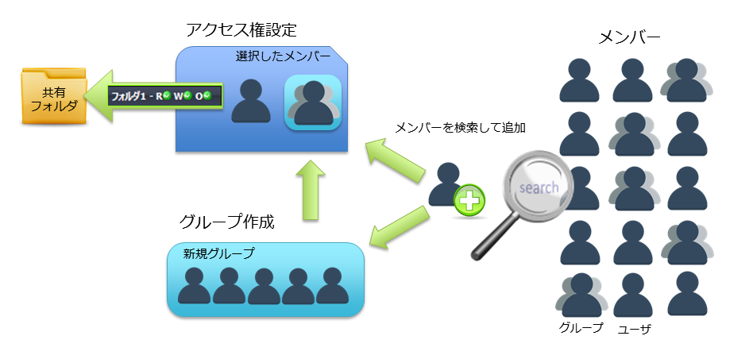

SecretFilesマニュアル
3. SecretFilesサービス(解説編)
3.2 各ペインの説明
3.2.3 中央ペイン
中央ペインには、次のタブが表示されています。

* ログインした方の権限によって、表示されるタブは異なります。
* このマニュアルでは、通常のご利用者が利用することのできる機能についてのみ説明します。
* ログインした方の権限によって、表示されるタブは異なります。
* このマニュアルでは、通常のご利用者が利用することのできる機能についてのみ説明します。
3.2.3.5 共有フォルダとグループ
グループの作成とフォルダの共有設定について説明します。1）共有フォルダの設定
フォルダに対して、他のユーザのアクセス権を設定し、フォルダを共有することができます。フォルダを共有する他のユーザ及び、グループを「メンバー」と呼びます。アクセス権を設定するには、対象の「メンバー」を検索し設定します。設定の際、「読み取り」、「書き込み」、「アクセス権設定」の権限を組み合わせ「メンバー」のアクセス権を登録します。
２）グループの作成
複数のユーザで同じアクセス権を設定する場合、「グループ」を作成しユーザのアクセス権をまとめることができます。作成した「グループ」に対して、「メンバー」を登録するには、【グループ編集】タブの右ペインで「メンバー」を検索し、追加します。
